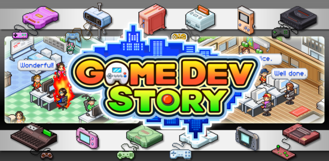
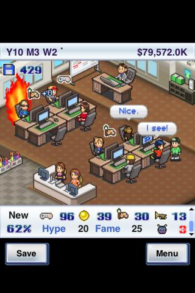
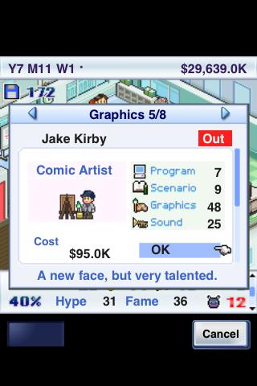

Game Dev Story para Android
Apr 14, 2011 · 3 minute read · CommentsHobbies

En el programa de los juegos del año independientes de Game Over hablaron de Game Dev Story, lo conocía desde hacía cierto tiempo pero fue entonces cuando el gusanillo me atacó con más fuerza así que acabé haciéndome con él para mi flamante HTC Desire HD. No puedo estar más satisfecho, pues me ha amenizado decenas de visitas al WC, viajes de autobús y esperas varias. En este artículo expondré mis impresiones sobre el simulador de empresa de videojuegos.
Gestiona tu empresa de videojuegos
Game Dev Story nos convierte en el presidente de un estudio de desarrollo de videojuegos. Comenzamos en un cuchitril a modo de oficina con un par de empleados trabajando como subcontrata para una empresa mayor mientras que tratamos de escalar en la industria. Retoma la fórmula de clásicos como Theme Hospital y lo adapta de forma estupenda al mundo móvil.
¿Realmente es una simulación?
Al principio parece un juego tremendamente profundo teniendo en cuenta que hablamos de un móvil. Debemos embarcarnos en proyectos, seleccionar la consola más apropiada, pagar los royalties oportunos, contratar al personal según las habilidades que necesitemos y decenas de detalles más. El proceso de desarrollo comienza y con él los primeros bugs que corregiremos (o no) de cara al lanzamiento. El número de aspectos a tener en cuenta es elevado: el presupuesto, la moral y energía de los trabajadores, la compatibilidad entre géneros o los fans son algunos ejemplos.
El principal problema de Game Dev Story es que la sensación de profundidad se desvanece cuando conseguimos la estabilidad económica suficiente para poder cometer pequeños errores. Al final todo se basa en lanzar juegos contratando a los mejores empleados e invertir en publicidad para arrasar en ventas y conseguir el premio al mejor juego del año. Deja de suponer un reto y pierde el interés aunque hasta entonces es satisfactorio.

La industria retratada en pixel art
El aspecto visual de Game Dev Story es muy simpático y ameno. Todo está diseñado con pixel art en perspectiva isométrica al más puro estilo Tycoon. En ese sentido, el juego rezuma amor por los cuatro costados y no puedo ponerle ninguna pega. Se entiende que para llegar a más mercado no hayan desplegado efectos ni utilizado gráficos 3D. No era necesario.
El mundo del videojuego está muy bien recreado y no podremos evitar una sonrisita cuando se organice el evento de presentación para una consola ficticia con un sospechoso parecido a alguna real. Los detalles están bastante cuidados y no sólo de la oficina sino que otros elementos han sido recreados como las ferias de videojuegos. No todo iba a ser una maravilla, lo que no se puede perdonar es el hecho de haya que jugar con el aparato en vertical y no tenga una resolución adaptable. Esto hace que queden dos bordes horrorosos arriba y abajo. Lamentable.

Conclusiones
Game Dev Story es un juego interesante por su temática, planteamiento y sorpresa inicial. Aunque se desinfle y no atraiga tanto conforme avanzan las horas de juego creo que merece la pena pagar los 3€ que cuesta en el Android Market. ¡Narices, es un juego de móviles! Los más escépticos pueden hacerse con la versión Lite de forma gratuita con la que podremos jugar durante dos años de simulación.